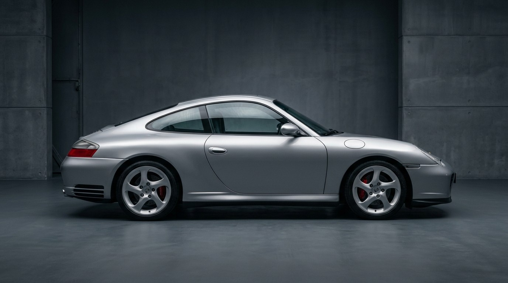

Trayectoria de cotización en Europa desde su precio de tarifa original hasta noviembre de 2026, diferenciando las fases 996.1 y 996.2, su mínimo histórico y el ritmo de revalorización de cada variante.

Mediana europea en buen estado con banda de horquilla (unidades básicas vs. colección).
Haz clic en cualquier fila para cargar su fotografía de estudio y curva de precios.
| Modelo | Fase | Años | Bloque Motor | Producción aprox. | Mínimo histórico | Mediana 2026 | Desde suelo |
|---|
Ajusta los parámetros de tu unidad para estimar su horquilla actual en Europa/España y copiar un resumen estructurado en BBCode.
Las unidades manuales con IMS documentado, libro sellado y boroscopia limpia encabezan la liquidez actual en el mercado español y alemán.
Factores técnicos que explican la dispersión de precios en España y Centroeuropa.
El 996.1 destaca por su menor peso (1.320 kg), el acelerador por cable en las unidades 98–99 y el rodamiento IMS de doble hilera en sus primeros años. El 996.2 aporta el motor 3.6L VarioCam Plus (320 CV), un 25 % más de rigidez estructural, guantera y los faros rediseñados tipo Turbo.
En Carrera 996.1, Carrera 996.2, Carrera 4S y 40 Jahre, contar con el rodamiento IMS sustituido (o doble hilera verificado) y una prueba de boroscopia de cilindros sin rayado (bore scoring) marca diferencias de 6.000 € a 10.000 € en la venta real.
Turbo, GT3 996.1, GT3 996.2 y GT3 RS equipan el cárter seco derivado de competición, exento del fallo IMS. Aquí manda la lectura limpia de la centralita DME y la pintura original. En los modelos con Tiptronic disponible, el cambio Manual 6v cotiza un 16–24 % por encima.